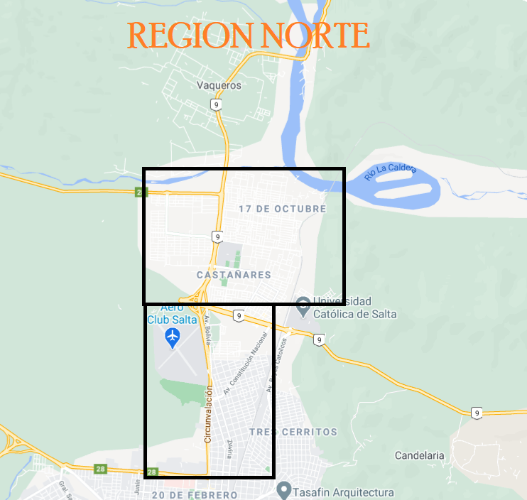

Extensiones de las regiones
Centro
El centro de la ciudad de Salta abarca hacia el este hasta la avenida del Bicentenario de la Batalla de Salta, hacia el sur hasta el inicio de la Avenida Paraguay, hacia el norte hasta el inicio de la avenida Bolivia, y hacia el oeste hasta la interseccion entre la avenida San Martin y la calle Zacarias Yanci
Norte
La region norte abarca desde el inicio de la avenida Bolivia hasta el puente de Vaqueros, y los barrios Mirasoles, El Huaico, Ciudad del Milagro, Barrio Belgrano y Ciudad del Milagro
Este
La region este abarca desde la avenida Bicentenario de la Batalla de Salta hasta el inicio de la avenida Asuncion
Sur
La region sur abarca desde el inicio de la avenida Paraguay hasta la autopista Circunvalacion Sureste
Oeste
La region oeste inicia en la interseccion de la avenida San Martin y la calle Zacarias Yanci, y abarca los barrios Grand Bourg, La Almudena, El Tipal y el municipio de San Lorenzo